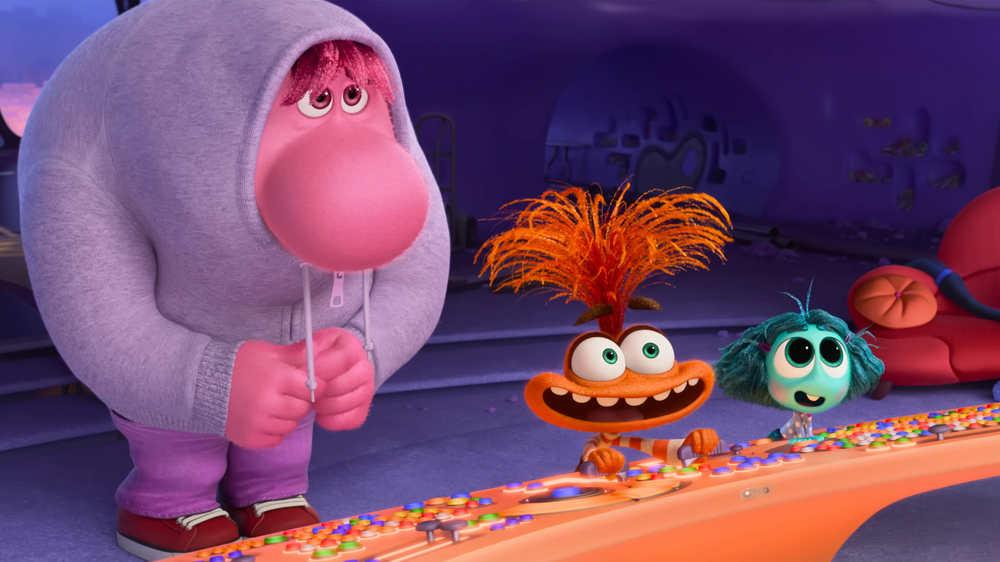
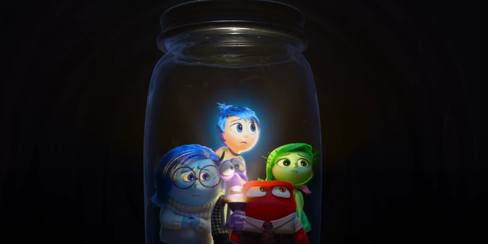
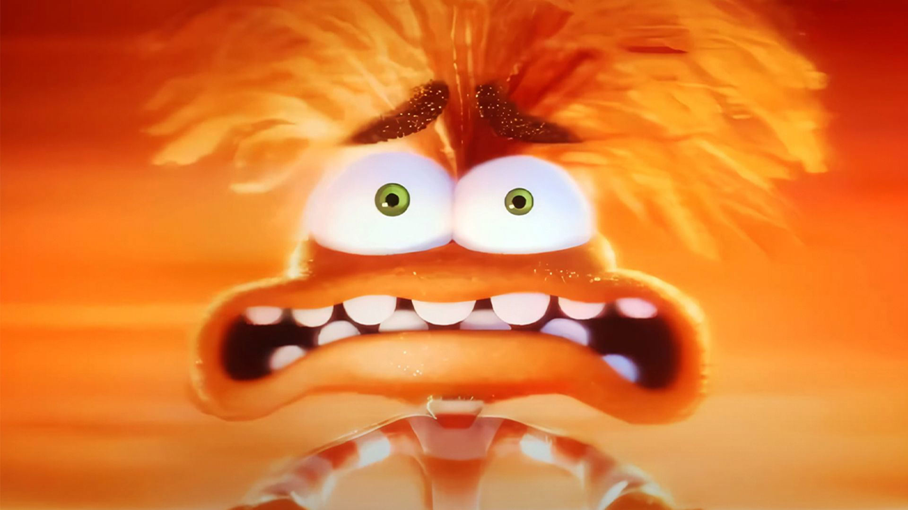

**This review contains spoilers, if you've still been unable to view it.**If you don't want to wade through my yapping, the bold text contains the final verdict.
I loved Inside Out. It was — and remains — one of my favourite movies of all time. So when I heard that Pixar were planning to make a sequel, I was ecstatic. I remember repeatedly refreshing Pixar's social media accounts and the Wikipedia page for the movie. I continued this every so often until the first few trailer were released and the constant refreshing was replaced with bubbling excitement of June 14th — release day.
Due to personal circumstances, I was not able to watch Inside Out 2 when it first launched in cinemas but was able to get a rather late showing in the late Summer. And Boy was it worth it!! I am not exaggerating when I say I consider the movie to be one of the best I've ever seen.
First, let's talk about the new roster of emotions: Anxiety, Embarrassment, Ennui, and Envy. Each perfectly cast, likable, and memorable. But Anxiety is clearly a rising star here. Not only because of Maya Hawke's amazing performance but also her mannerisms. And character design!
Look at her! The baggage! The grin! The hands! Argh! I'm not quite sure who exactly designed Anxiety but wow whoever did that ate and left no crumbs. Because that is probably one of the best characters I've ever seen. I mean all the characters really match their emotions. Embarrassment is this big guy who struggles to hide himself and he's wearing his hoodie and trying not be conspicuous like wow. S tier. The characters are so well designed honestly I would be happy just watching them walk around for an hour.
But the plot is just as good. I know a lot of people thought it was a rehash (more on this later) but the plotline is actually really interesting and really poignant. As with Inside Out, the crew hired a psychologist. But they also hired some teenage girls — dubbed 'Riley's crew' — to come over and basically ensure the film talked about real teenage experiences and was #authentic. And it worked. The film genuinely feels like you've stepped into the life of a teenage girl and I for one and proud that the crew managed to show teenagehood in such a real way.
Everything about the plot just works. From Riley struggling to impress her idol, Val, to the fact that Anxiety takes the reins... wow... the writers really knew what they were doing. I really do like the way that they set up everything. The Sense of Self is introduced pretty early on, as is Joy's Riley Protection System. And both are introduced naturally, in a way that doesn't feel overly convoluted or expostion-y.
And the Riley Protection System is a really good item in the film. Everyone has horrible memories that they wish could stay buried FOREVER but repressing them isn't bad. And I love the film's message that we should embrace ourselves, as ourselves. We shouldn't attempt to change ourselves to be liked. As Joy says, "we love our girl ... every messy, beautiful part of her".
As well as that, I really did like the literal bottling up of emotions that Anxiety orders onto Joy, Fear, Sadness, Disgust, and Anger. It's a both a great visual gag and a heartbreaking look at what some teenagers have to do. Don't bottle up your emotions kids. All your emotions are natural and crying doesn't make you weak. Anyone who tells you that is a Grade A Moron.
But honestly, Inside Out 2 is packed with gags and humour that land almost every time. From Bloofy talking to the wall and Pouchy only having dynamite, as well as Lance Slashblade's useless power. Mount Crushmore — shown fleetingly — makes a great callback to Riley's First Date? and is just a great, quick way of showing Riley's love life, which is not shown at all in the movie. Which I actually respect. (more on this later). Each joke each humourous line never takes away from the emotional core of the film. There's plenty of laughs, but the movie isn't afraid to get real and deep. And that's a lot harder to do than it sounds.
But by far the movie's biggest strength is the panic attack scene. It's the climax of the film and the movie was praised by virtually everybody for its authentic, raw depiction of a panic attack. Even if you can't relate to that specifically, you can feel what Riley is feeling. And that is important. Not everyone will have panic attacks; some people will go their entire lives without having one. But it's important that people understand what a panic attack feels like. Through the scene, people who have not had panic attacks and empathise with people who do have them and showing that to viewers is incredibly important to breaking down stigmas around mental health.
The scene is poignant and necessary. Tragically, even in 2025, a huge stigma exists around mental health and especially anxiety. One of the best ways you can shatter stigmas and break misinformation around mental health is to show it in pop culture. Not in a tokenistic, vacuous way but properly, with care and research and that is exactly what the filmmakers did. The good folks at Cinema Therapy on YouTube (link) did several videos analysing the film of which sometimes they invited the crew to talk about the production of the film and what it meant to them. And it was so nice seeing the thought process and the love that went into this movie.
But the whole movie is poignant. Riley is growing up and that comes with new challenges as well as new opportunities. Even in the opening, we can see how small family island is compared to the others, which is a sad but true reminder that kids will leave the nest as they age. Throughout the film, we see Riley betraying herself, her friends, just to fit in. She's trying so hard to fit in, to be friends with Val and wow that is... real. My favourite line is said at the climax, uttered by Joy.
"Maybe that's what happens when you grow up ... you feel less Joy."
My heart. That's too real Pixar. Too real. But it works. It's quite possibly one of the best lines in the entire film.
And it's not just the plot and the character design. I really loved the score for this film. In my opinion, the mark of a good soundtrack is if you go back to listen to it after you've finished the film. And that's what I did with Inside Out 2's soundtrack. The score is great and really pumps up each scene by getting you into the mood of it but my personal favourite one is "Inside Outro", which plays during the End Credits. There's just something so great about that one piece. I can't explain why. But I love it. It's great. Seriously go back and listen to it. Even if that's the only one you choose to listen to. But listen to the full soundtrack because it rocks.
I did mention it briefly earlier but all the voice actors portray their parts excellently. Tony Hale and Liz Lapira fill in the parts of Bill Hader and Mindy Kaling really well (Tony Hale played that guy whose wife only married him for his weird tunnel in that Netflix series you probably don't want to see). I think the best vocal performance came from Maya Hawke (as noted earlier) because she just buzzed this anxious energy that Anxiety would have, although all the voice actors for the emotions were able to portray their emotion in all their speech. Ayo Edebiri is a perfect Envy, being able to show off that excited, envious energy really well. Watch it again and pay attention purely to her speaking roles and you'll understand what I'm saying. The voice actors from the previous films were spot-on as expected (especially Anger's interactions with Pouchy which always made me laugh). Kensington Tallman really shines as Riley, especially the at the climax when Riley's having her panic attack. YNB (I didn't even realise it was her at first wow) is a great Coach Roberts. All the other voice actors were great as well and I was glad to see John Ratzenberger return in a cameo role as Fritz
It is not a cash grab; it is too well made. Like JHUIFHASKFDSHK well made (that's very good; it's like me being speechless, trying to portray that through text. It's very difficult). The love that went into each scene, each character, each line of dialogue is so intricately woven and the result is a damn-near perfect film. And I don't care what anyone it says, it deserves every cent of its phenomenal box office gross. Look at all the details! Joy's analysis of how she could use the broken Stream of Thought and Sar-Casm to be used later on in the film (does that count as a Chekov's Gun?), the sign during the puberty sequence that reads "puberty is messy", to the Apple 1984 reference?? It's choc-a-block with details and easter eggs and physical humour and if I listed them all we'd be here forever. So the next time you watch it (which should hopefully be soon), you should just try and go on an easter-egg hunt. There's a LOT in there.
So? My verdict. Watch it right now. If you have watched it already, watch it again. If you haven't, watch it now. What are you waiting for? RENT! STREAM! BUY! You won't regret it.
This is the part where I defend the film from critiques I've seen online, as well as give thoughts on external things (such as marketing, merchandise, etc).
First, the merchandise. As with all Disney made/distributed/owned media, there is a lot of stuff you can buy. You can buy apparel, mugs, plushies. There's a treasure trove of things to buy. Except one thing is missing. ONE GLARING OMISSION! WHERE IS MY SENSE OF SELF NIGHTLIGHT!?!? Disney! This is a FAMILY FILM! You missed out on the opportunity of a lifetime! Kids are scared of the dark yes? They like nightlights to help them sleep affirm? Where is my nightlight in the shape of the senses of selves? You can even sell different ones to make even more money! Bro! You're missing out! This has nothing to do with the film but boy was I annoyed when that doesn't exist. I give you my full permission to use this idea. This whole review is licenced under a CC 3.0 BY licence anyway allowing you guys to go nuts with the content. Like bro. Make it happen. I will buy it. It will be my FIRST EVER Disney merchandise. Money well spent I reckon. And I'm not even afraid of the dark.
The marketing was pretty great — nothing more to say there.
So now the defence. Oh boy. When the movie came out, I rummaged through the internet, looking for common critiques of the film. I think the most common one was complaining that the film was a rehash of Inside Out, followed by a lack of love interest for Riley.
The film was NOT a rehash. It's easy to think that because both films involve an emotion trying to get back to headquarters, but both are very different. We see a lot more of the mind in Inside Out 2. Inside Out 2 has Anxiety as an antagonist and actively trying to keep the OG emotions out. Joy et al are able to interact more so with the headquarter guys than in Inside Out. The emotions are all working together (instead of Joy dragging Sadness around in the first film), Anxiety is an antagonist (even though she doesn't mean to be). In fact, if I listed every difference, this review would probably get flagged for copyright infringement so all I can say is to watch both. Then come back to me.
The next biggest thing was that there was no "love" emotion or the other... feelings that the internet put it. I understand that falling in love, having crushes is a big part of being a teenager — heck it's a big part of being an adult. And we do see evidence of Riley's crushes at Mount. Crushmore. However, love is a complex thing, so that adding a love interest to this movie would've bloated it and wouldn't be able to show the nuances of love or anxiety in the way that the film did for anxiety. Perhaps we could see it in a possible sequel? Maybe, maybe not but I respect the film makers for abstaining from shoehorning in a romantic arc.
Now that's not to say you can't not like it. Your opinion is valid. But I just left this here because this is my opinion. That some critique isn't fair. You might disagree and that is perfectly fine and perfectly valid. This is just my two cents.
My best wishes to the cast and crew of Inside Out 2 at the 2025 Academy Awards®.
This was my first ever proper film review so if it is crap it's because this is my first time doing it. Submit corrections, queries, or comments to the email address below. Or you can contact me on Instagram. Whichever works best for you.
WORK IS LICENSED UNDER A CREATIVE COMMONS 3.0 ATTRIBUTION LICENCE.